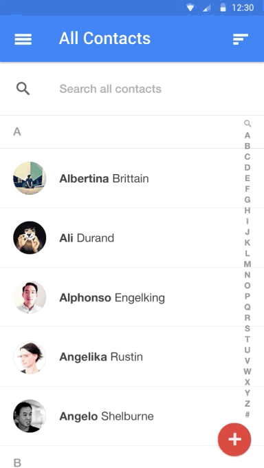
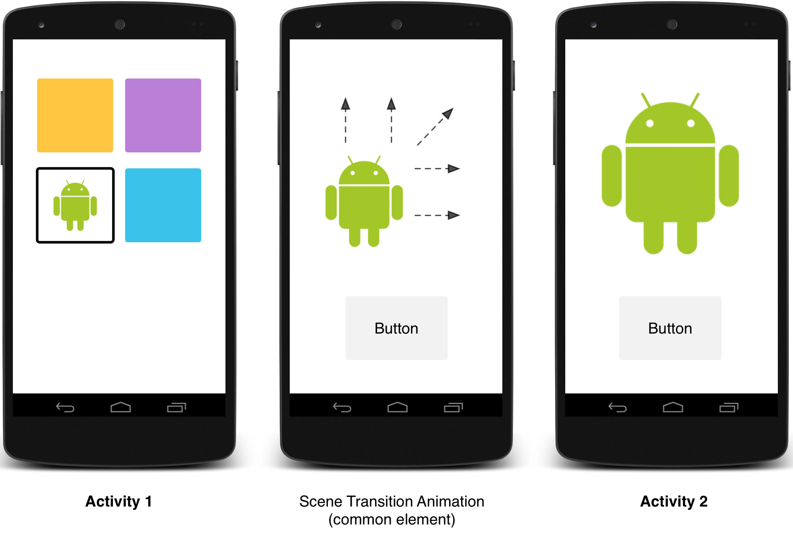

編寫: allenlsy - 原文: https://developer.android.com/training/material/animations.html
Material Design中的動畫對用戶的動作進行反饋，並提供在整個交互過程中的視覺連續性。Material 主題為按鈕和Activity切換提供一些默認的動畫，Android 5.0 (API level 21) 及以上版本支持自定義這些動畫並創建新動畫：
Material Design中的觸摸反饋，是在用戶與UI元素交互時，提供視覺上的即時確認。按鈕的默認觸摸反饋動畫使用了新的RippleDrawable類，它在按鈕狀態變換時產生波紋效果。
大多數情況下，你需要在你的 XML 文件中設定視圖的背景來實現這個功能：
?android:attr/selectableItemBackground 用於有界Ripple動畫?android:attr/selectableItemBackgroundBorderless 用於越出視圖邊界的動畫。它會被繪製在最近的且不是全屏的父視圖上。Note：
selectableItemBackgroundBorderless是 API level 21 新加入的屬性
另外，你可以使用ripple元素在XML資源文件中定義一個 RippleDrawable。
你可以給RippleDrawable賦予一個顏色。要改變默認的觸摸反饋顏色，使用主題的android:colorControlHighlight 屬性。
更多信息，參見RippleDrawable類的API文檔。
填充效果在UI元素出現或隱藏時，為用戶提供視覺連續性。ViewAnimationUtils.createCircularReveal()方法可以使用一個附著在視圖上的圓形，顯示或隱藏這個視圖。
要用此效果顯示一個原本不可見的視圖：
// previously invisible view
View myView = findViewById(R.id.my_view);
// get the center for the clipping circle
int cx = (myView.getLeft() + myView.getRight()) / 2;
int cy = (myView.getTop() + myView.getBottom()) / 2;
// get the final radius for the clipping circle
int finalRadius = myView.getWidth();
// create and start the animator for this view
// (the start radius is zero)
Animator anim =
ViewAnimationUtils.createCircularReveal(myView, cx, cy, 0, finalRadius);
anim.start();
要用此效果隱藏一個原本可見的視圖：
// previously visible view
final View myView = findViewById(R.id.my_view);
// get the center for the clipping circle
int cx = (myView.getLeft() + myView.getRight()) / 2;
int cy = (myView.getTop() + myView.getBottom()) / 2;
// get the initial radius for the clipping circle
int initialRadius = myView.getWidth();
// create the animation (the final radius is zero)
Animator anim =
ViewAnimationUtils.createCircularReveal(myView, cx, cy, initialRadius, 0);
// make the view invisible when the animation is done
anim.addListener(new AnimatorListenerAdapter() {
@Override
public void onAnimationEnd(Animator animation) {
super.onAnimationEnd(animation);
myView.setVisibility(View.INVISIBLE);
}
});
// start the animation
anim.start();

Material Design中的Activity切換，當不同Activity之間擁有共有元素，則可以通過不同狀態之間的動畫和形變提供視覺上的連續性。你可以為共有元素設定進入和退出Activity時的自定義動畫。
Android 5.0 (API level 21) 支持這些入場和退出變換：
任何繼承於 Visibility 類的變換，都支持被用於入場或退出變換。更多信息，請參見 Transition 類的API文檔。
Android 5.0 (API level 21) 還支持這些共有元素變換效果：
當你在應用中進行activity 變換時，默認的淡入淡出效果會被用在進入和退出activity的過程中。

首先，當你繼承Material主題的style時，要通過android:windowContentTransitions屬性來開啟窗口內容變換功能。你也可以在style定義中聲明進入、退出和共有元素切換：
<style name="BaseAppTheme" parent="android:Theme.Material">
<!-- enable window content transitions -->
<item name="android:windowContentTransitions">true</item>
<!-- specify enter and exit transitions -->
<item name="android:windowEnterTransition">@transition/explode</item>
<item name="android:windowExitTransition">@transition/explode</item>
<!-- specify shared element transitions -->
<item name="android:windowSharedElementEnterTransition">
@transition/change_image_transform</item>
<item name="android:windowSharedElementExitTransition">
@transition/change_image_transform</item>
</style>
例子中的change_image_transform 切換定義如下：
<!-- res/transition/change_image_transform.xml -->
<!-- (see also Shared Transitions below) -->
<transitionSet xmlns:android="http://schemas.android.com/apk/res/android">
<changeImageTransform/>
</transitionSet>
changeImageTransform 元素對應 ChangeImageTransform 類。更多信息，請參見 Transition類的API文檔。
要在代碼中啟用窗口內容切換，調用Window.requestFeature()函數：
// inside your activity (if you did not enable transitions in your theme)
getWindow().requestFeature(Window.FEATURE_CONTENT_TRANSITIONS);
// set an exit transition
getWindow().setExitTransition(new Explode());
要聲明變換類型，就要在Transition對象上調用以下函數：
Window.setEnterTransition()Window.setExitTransition()Window.setSharedElementEnterTransition()Window.setSharedElementExitTransition()setExitTransition() 和 setSharedElementExitTransition() 函數為activity定義了退出變換效果。setEnterTransition() 和 setSharedElementEnterTransition() 函數定義了進入activity的變換效果。
要獲得切換的全部效果，你必須在出入的兩個activity中都開啟窗口內容切換。否則，調用的activity會使用退出效果，但是接著你會看到一個傳統的窗口切換（比如縮放或淡入淡出）。
要儘早開始入場切換，可以在被調用的Activity上使用Window.setAllowEnterTransitionOverlap() 。它可以使你擁有更戲劇性的入場切換。
如果你開啟Activity入場和退出效果，那麼當你在用如下方法開始Activity時，切換效果會被應用：
startActivity(intent,
ActivityOptions.makeSceneTransitionAnimation(this).toBundle());
如果你為第二個Activity設定了入場變換，變換也會在activity開始時被啟用。要在開始另一個acitivity時禁用變換，可以給bundle的選項提供一個null對象：
要在兩個擁有共用元素的activity間進行切換動畫：
android:transitionName屬性在兩個layout文件中給共有元素賦予同一個名字ActivityOptions.makeSceneTransitionAnimation()方法// get the element that receives the click event
final View imgContainerView = findViewById(R.id.img_container);
// get the common element for the transition in this activity
final View androidRobotView = findViewById(R.id.image_small);
// define a click listener
imgContainerView.setOnClickListener(new View.OnClickListener() {
@Override
public void onClick(View view) {
Intent intent = new Intent(this, Activity2.class);
// create the transition animation - the images in the layouts
// of both activities are defined with android:transitionName="robot"
ActivityOptions options = ActivityOptions
.makeSceneTransitionAnimation(this, androidRobotView, "robot");
// start the new activity
startActivity(intent, options.toBundle());
}
});
對於用代碼編寫的共有動態視圖，使用View.setTransitionName()方法來在兩個activity中定義共有元素。
要在第二個activity結束時進行逆向的場景切換動畫，調用Activity.finishAfterTransition()方法，而不是Activity.finish()。
要在擁有多個共有元素的activity之間使用變換動畫，就要用android:transitionName屬性在兩個layout中定義這個共有元素（或在兩個Activity中使用View.setTransitionName()方法），再創建ActivityOptions對象：
ActivityOptions options = ActivityOptions.makeSceneTransitionAnimation(this,
Pair.create(view1, "agreedName1"),
Pair.create(view2, "agreedName2"));
Material Design中的動畫可以表示為基於時間插值和空間移動模式的曲線。在Android 5.0 (API level 21)以上版本中，你可以為動畫定義時間曲線和曲線動畫模式。
PathInterpolator類是一個基於貝澤爾曲線或Path對象的新的插值方法。插值方法 是一個定義在 1x1 正方形中的曲線函數圖像，其始末兩點分別在(0,0)和（1,1)，一個用構造函數定義的控制點。你也可以使用XML資源文件定義一個插值方法：
<pathInterpolator xmlns:android="http://schemas.android.com/apk/res/android"
android:controlX1="0.4"
android:controlY1="0"
android:controlX2="1"
android:controlY2="1"/>
Material Design標準中，系統提供了三種基本的曲線：
@interpolator/fast_out_linear_in.xml@interpolator/fast_out_slow_in.xml@interpolator/linear_out_slow_in.xml你可以將一個PathInterpolator對象傳給Animator.setInterpolator()方法。
ObjectAnimator類有一個新的構造函數，使你可以沿一條路徑使用多個屬性來在座標系中進行變換。比如，以下animator（動畫器，譯者注）使用一個Path對象來改變一個試圖的X和Y屬性：
ObjectAnimator mAnimator;
mAnimator = ObjectAnimator.ofFloat(view, View.X, View.Y, path);
...
mAnimator.start();
StateListAnimator 類是你可以定義在視圖狀態改變啟動的Animator（動畫器，譯者注）。以下例子展示如何在XML文件中定義StateListAnimator：
<!-- animate the translationZ property of a view when pressed -->
<selector xmlns:android="http://schemas.android.com/apk/res/android">
<item android:state_pressed="true">
<set>
<objectAnimator android:propertyName="translationZ"
android:duration="@android:integer/config_shortAnimTime"
android:valueTo="2dp"
android:valueType="floatType"/>
<!-- you could have other objectAnimator elements
here for "x" and "y", or other properties -->
</set>
</item>
<item android:state_enabled="true"
android:state_pressed="false"
android:state_focused="true">
<set>
<objectAnimator android:propertyName="translationZ"
android:duration="100"
android:valueTo="0"
android:valueType="floatType"/>
</set>
</item>
</selector>
要把視圖改變Animator關聯到一個視圖，就要在XML資源文件的selector元素上定義一個Animator，並把此Animator賦值給視圖的 android:stateListAnimator 屬性。要想在Java代碼中將狀態列表Animator賦值給視圖，使用AnimationInflater.loadStateListAnimator() 函數，並用View.setStateListAnimator()函數把Animator賦值給你的視圖。
當你的主題繼承於Material Theme的時候，Button默認會有一個Z值動畫。為了避免Button的Z值動畫，設定它的android:stateListAnimator屬性為@null。
AnimatedStateListDrawable類使你可以創建一個在視圖狀態變化之間顯示動畫的drawable。有一些Android 5.0系統組件默認已經使用了這些動畫。下面的例展示如何在XML資源文件中定義AnimatedStateListDrawable：
<!-- res/drawable/myanimstatedrawable.xml -->
<animated-selector
xmlns:android="http://schemas.android.com/apk/res/android">
<!-- provide a different drawable for each state-->
<item android:id="@+id/pressed" android:drawable="@drawable/drawableP"
android:state_pressed="true"/>
<item android:id="@+id/focused" android:drawable="@drawable/drawableF"
android:state_focused="true"/>
<item android:id="@id/default"
android:drawable="@drawable/drawableD"/>
<!-- specify a transition -->
<transition android:fromId="@+id/default" android:toId="@+id/pressed">
<animation-list>
<item android:duration="15" android:drawable="@drawable/dt1"/>
<item android:duration="15" android:drawable="@drawable/dt2"/>
...
</animation-list>
</transition>
...
</animated-selector>
矢量Drawable是可以無損縮放的。AnimatedVectorDrawable類是你可以操作矢量Drawable。
你通常在3個XML文件中定義動畫矢量Drawable：
res/drawable/中用<vector>定義一個矢量drawableres/drawable/中用<animated-vector>定義一個動畫矢量drawable動畫矢量drawable可以用在<group>和<path>元素的屬性上。<group>元素定義了一些path或者subgroup，<path>定義了一條被繪畫的路徑。
當你想要定義一個動畫的矢量drawable時，使用android:name 屬性來為group和path賦值一個唯一的名字(name)，這樣你可以通過animator的定義找到他們。比如：
<!-- res/drawable/vectordrawable.xml -->
<vector xmlns:android="http://schemas.android.com/apk/res/android"
android:height="64dp"
android:width="64dp"
android:viewportHeight="600"
android:viewportWidth="600">
<group
android:name="rotationGroup"
android:pivotX="300.0"
android:pivotY="300.0"
android:rotation="45.0" >
<path
android:name="v"
android:fillColor="#000000"
android:pathData="M300,70 l 0,-70 70,70 0,0 -70,70z" />
</group>
</vector>
動畫矢量drawable的定義是通過name屬性來找到視圖組(group)和路徑(path)的：
<!-- res/drawable/animvectordrawable.xml -->
<animated-vector xmlns:android="http://schemas.android.com/apk/res/android"
android:drawable="@drawable/vectordrawable" >
<target
android:name="rotationGroup"
android:animation="@anim/rotation" />
<target
android:name="v"
android:animation="@anim/path_morph" />
</animated-vector>
動畫的定義代表ObjectAnimator或者AnimatorSet對象。例子中第一個animator將目標組旋轉了360度。
<!-- res/anim/rotation.xml -->
<objectAnimator
android:duration="6000"
android:propertyName="rotation"
android:valueFrom="0"
android:valueTo="360" />
第二個animator將矢量drawable的路徑從一個形狀(morph)變形到另一個。兩個路徑都必須是可以形變的：他們必須有相同數量的命令，每個命令必須有相同數量的參數
<!-- res/anim/path_morph.xml -->
<set xmlns:android="http://schemas.android.com/apk/res/android">
<objectAnimator
android:duration="3000"
android:propertyName="pathData"
android:valueFrom="M300,70 l 0,-70 70,70 0,0 -70,70z"
android:valueTo="M300,70 l 0,-70 70,0 0,140 -70,0 z"
android:valueType="pathType" />
</set>
更多信息，請參考AnimatedVectorDrawable)的API指南。